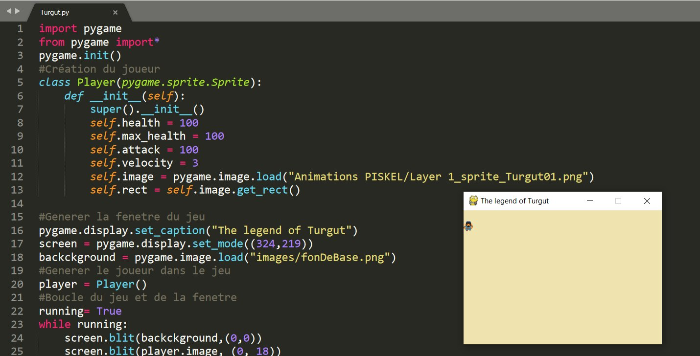

Bonjour à tous et bienvenue sur le site de mon projet The legend of Turgut.
En reconversion professionnelle depuis le mois de mai 2020, je partage avec vous ce projet ludique.
Un projet jeu qui me permet de coder avec l'aide de mes enfants Phaser.js, Pygame et maintenant
Unity.
Le jeu vidéo est un moyen ludique et plaisant pour partager et faire découvrir
la programmation. J'ai toujours aimé partager mes connaissances et j'espère que ce projet sucitera
autant de plaisir que j'ai à le concevoir ! Alors merci à vous...
Turgut est un personnage fictif d'anatolie, à l'époque où les peuples turcs
vivaient encore comme des nomades. L'idée d'en faire un jeu d'aventure est simple : La
Turquie est un pays chargé d'histoire, le meilleur endroit pour un RPG (jeu d'aventure). Le
choix des graphismes en pixel, qui rappel le retro gaming est la pour me faciliter
la tache et me focaliser sur le code.
J'essaie de réaliser par moi même l'ensemble des éléments du jeu pour plus de cohérence. Le son, les images
et le code sont réalisés par mes soins ou adaptés à mes besoins.
Les histoires de Turgut vous ferront décrouvir l'histoire et la culture de Turquie.
J'ai réalisé le personnage Turgut grace au logiciel PISKEL. En me référant à link dans le jeu The Legend of Zelda Une des grande référence du retro-gaming dans les jeux d'aventure. A l'époque, ce jeu se jouait avec une manette à deux boutons seulement. Actuellement nous en avons beaucoup plus et je vais devoir trouver des fonctionnalités supplémentaires. Le jeu était aussi pauvre en interaction... Pas mal de travail à fournir mais pas mal de plair à prendre aussi

J'ai commencé ce projet sans meme avoir fini une seule formation python. Mais google et stackoverflow sont mes amis. Avec
quelques livres, des tutos en plusieurs langues et quelques recherches sur le net, j'ai trouvé pas mal de ressources pour mon jeu.

Les débuts n'ont pas été simple mais j'ai eu le plaisir de voir que tout était fonctionnel ! et quand on débute, on ne se soucie que de ça.